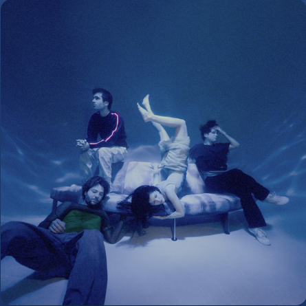

Sienna
THE MARÍAS
0:003:44
🔉
HTML made by SrYor
🎶🎵
Please tell me not to goPor favor, dime que no me vaya
We've been here long beforeHemos estado aquí mucho tiempo
I live under your eyelidsVivo bajo tus párpados
I'll always be yoursSiempre voy a ser tuya
I'll lay on your rooftop in the freezing coldMe voy a acostar en tu techo en un frío congelante
And I'll watch the sunset wearing all your clothesY voy a ver el atardecer usando toda tu ropa
I can feel you with me like I did beforePuedo sentirte conmigo como ya te sentí antes
Like when I sang you a love song by Norah JonesComo cuando te canté una canción de amor de Norah Jones
Ooh, Sienna would've been cuteUh, Sienna habría sido tierno
Ooh, Sienna would look just like youUh, Sienna sería tan tú
I came clean, and it feels so goodFui honesta y fue tan bueno
But I feel seen only through youSolo me siento vista por ti
I'll wait here tomorrow outside your doorEsperaré aquí mañana fuera de tu puerta
Like I did in December when you held me closeComo lo hice en diciembre cuando me abrazaste fuerte
Coming up on your corner, pulling out my hairLlegando a la esquina de tu casa volviéndome loca
Hear the creak in the floorboards going up the stairsEscucho el crujir de las tablas del piso subiendo las escaleras
Ooh, Sienna would've been cuteUh, Sienna habría sido lindo
Ooh, Sienna would look just like youUh, Sienna sería tan tú
With a temper like you, run around like youCon un temperamento igual al tuyo, corriendo por ahí como tú
Jumping in the pool like youSaltando en la piscina como tú
Sing to all her pets in the way I didCantando para todos sus animalitos como yo también canté
Be sensitive like youSería sensible como tú
And I smile when I think of all the times we hadY sonrío cuando pienso en todos los momentos que tuvimos
On the beach in the winter, when the waves were madEn la playa durante el invierno, cuando las olas estaban furiosas
Down by the water, crystal clearCerca del agua cristalina
See her face in the forest, then it disappearsVeo su rostro en el bosque y luego desaparece